Inhalt Index DeskTop Bronstein

 Differentialrechnung Differentiation von Funktionen von mehreren Veränderlichen Extremwerte von Funktionen von mehreren Veränderlichen
Differentialrechnung Differentiation von Funktionen von mehreren Veränderlichen Extremwerte von Funktionen von mehreren Veränderlichen


Wenn das Extremum einer Funktion 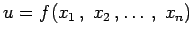 mit n Veränderlichen bestimmt werden soll, die voneinander abhängig und durch die Nebenbedingungen
| 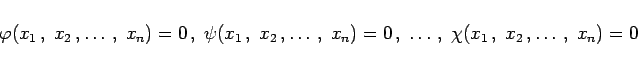 | (6.73a) |
miteinander verknüpft sind, wobei die Anzahl dieser Verknüpfungen k < n sein muß, dann führt man gemäß der Multiplikatorenmethode von LAGRANGE k unbestimmte Multiplikatoren 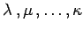 ein und betrachtet die folgenden LAGRANGE-Funktionen der n+k Veränderlichen 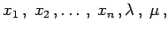 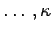:
| 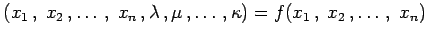 | |||
| 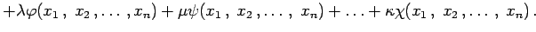 | (6.73b) |
| 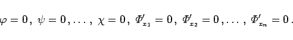 | (6.73c) |
Als notwendige Bedingung dafür, daß die Funktion f im Punkte 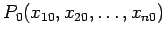 ein Extremum besitzen kann, muß das Wertesystem 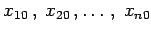 diese Gleichungen erfüllen.
| Beispiel | ||
|
Die Extremwerte der Funktion u = f(x,y) mit der Nebenbedingung 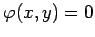 werden aus den drei Gleichungen
mit den drei Unbekannten 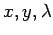 bestimmt. |